Showroom: İzmir – Türkiye
Fabrika: Kaynaklar – İzmir
Telefon: 0532 441 10 60
E-posta: barisbagirlar@gmail.com
İntema mimari tasarım dili ve İzmir atölyemizin özel imalat gücüyle anahtar teslim mutfak tadilatı ve dolap projelerimiz.
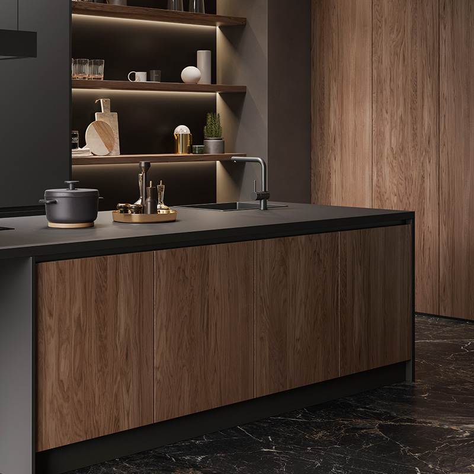
INOVAGola entegre profil, seramik ada tezgah, gizli aydınlatmalı kiler ve Blum fren mekanizmaları.
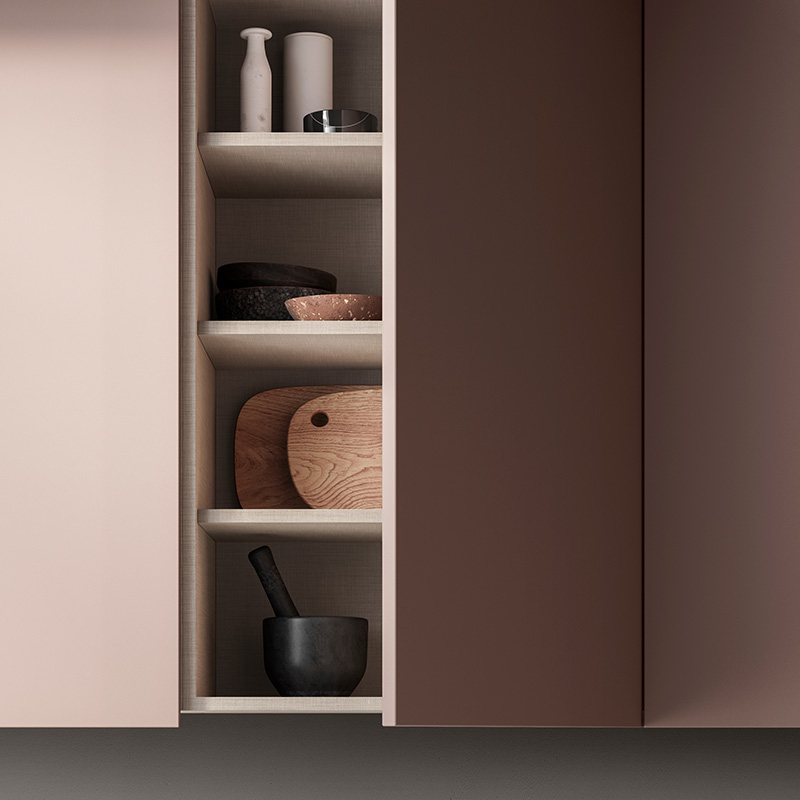
PRIMEİpek mat lake yüzey, doğal ahşap bar masası, entegre ankastre kule modülleri.
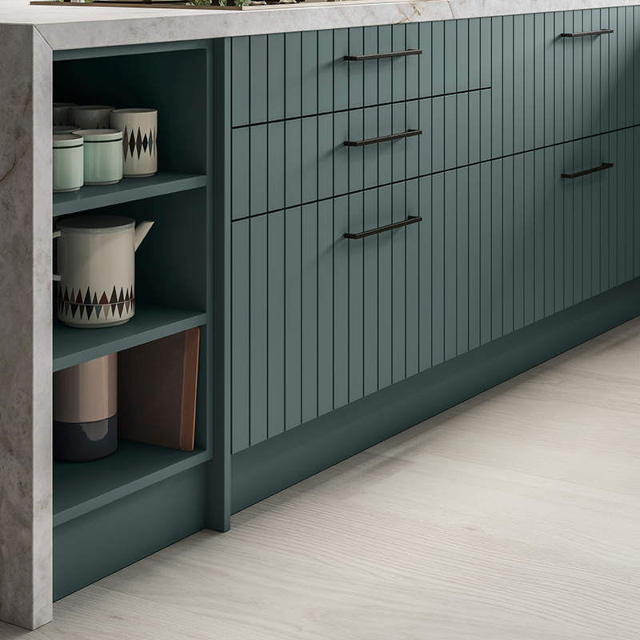
FRESCAFüme alüminyum çerçeveli cam kapaklar, sıcak ahşap dokular ve geniş tezgah adası.
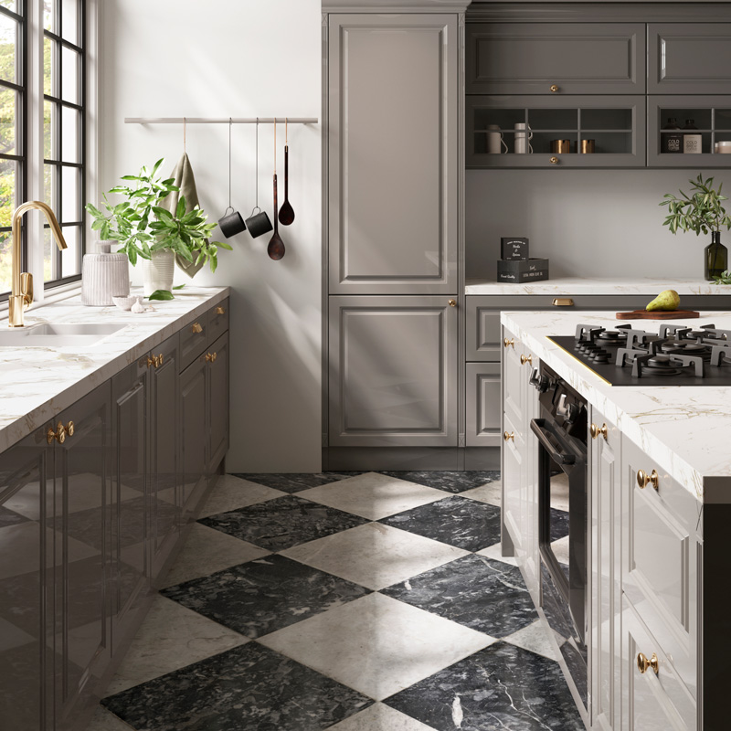
TOSCANAZarif çıtalı lake kapaklar, antik pirinç kulplar, porselen eviye ve masif ada detayları.
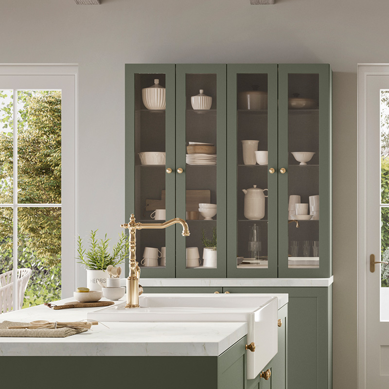
VEGAKompakt fonksiyonel dolap mimarisi, kuvars tezgah, gizli kiler sepetleri ve LED hatları.
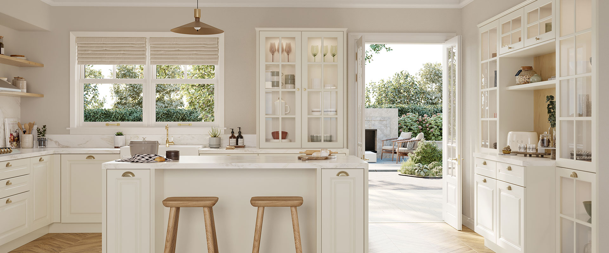
SIENAÖzel freze kapak işçiliği, ada üzeri asma raf sistemi, lüks mermer damarlı tezgah.
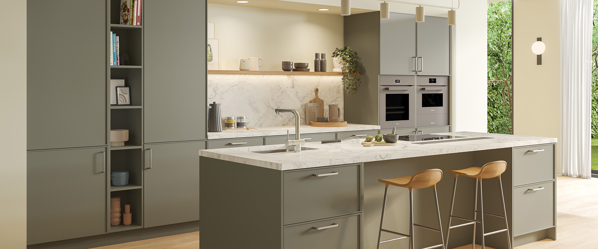
NORDAHuş ve doğal meşe kaplamalar, sakin nötr tonlar, ergonomik boy kiler dolapları.
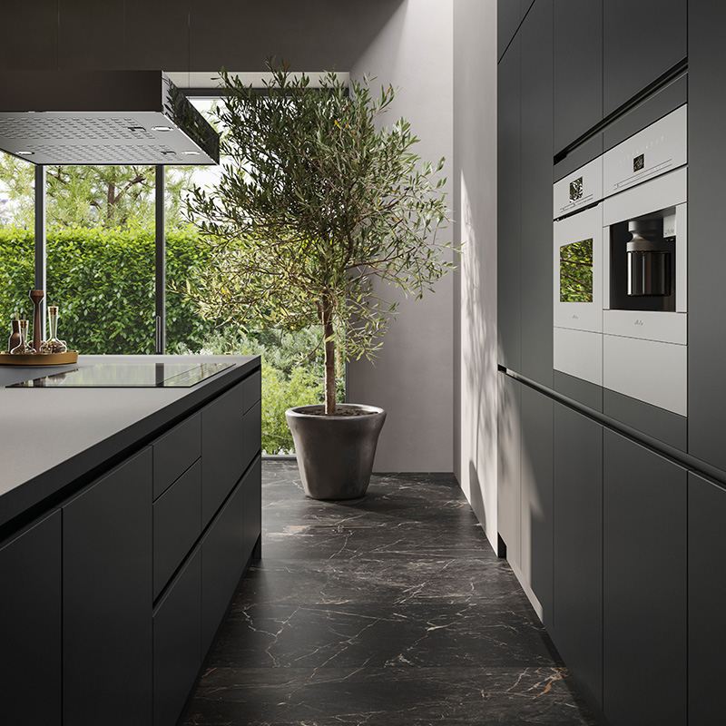
INOVA ARCHÇizilmez porselen tezgah, gömme kahve köşesi, dokunmatik elektrikli kalkar kapaklar.
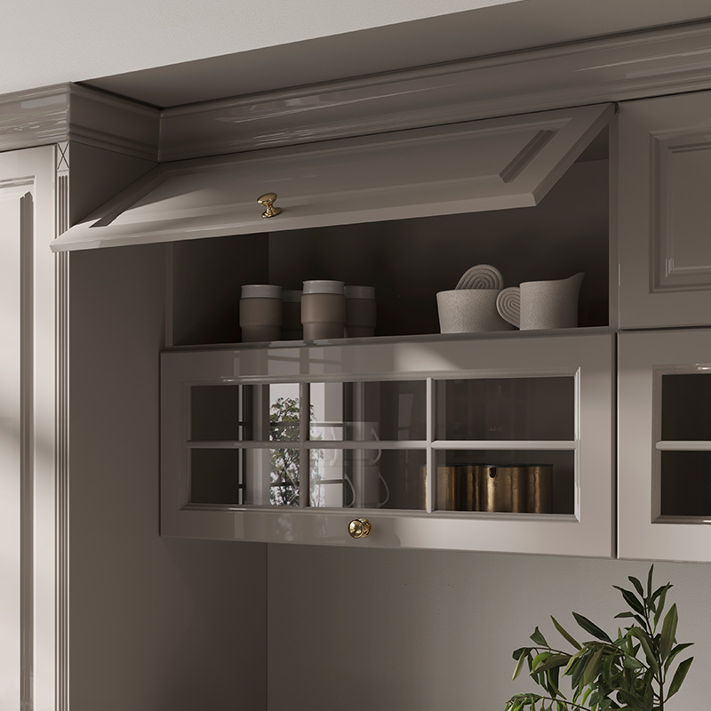
TOSCANA LUXEÖzel el yapımı ahşap şaraplık, vitrin aydınlatması, İtalyan sararmaz fırın lake cila.
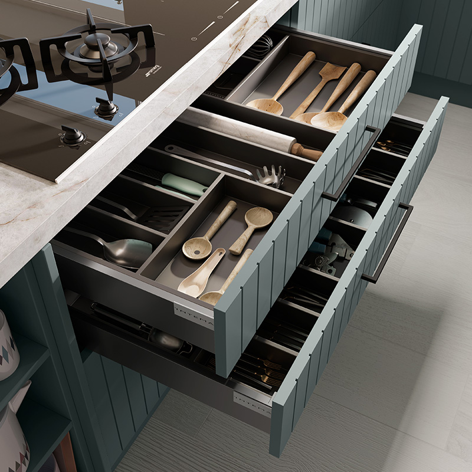
FRESCA LOFTGeniş ada tezgah altı çekmece sistemleri, gizli priz kuleleri ve davlumbaz entegrasyonu.
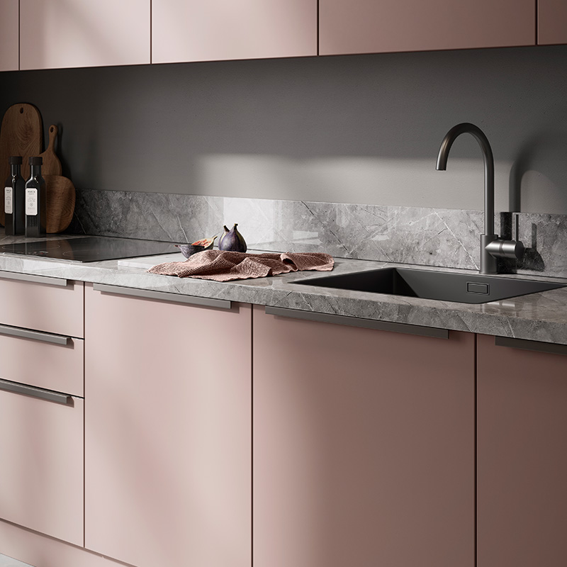
PRIME ELEGANCEDerin mat antrasit akrilik yüzeyler, doğal ahşap açık niş raflar, gizli kulp mimarisi.
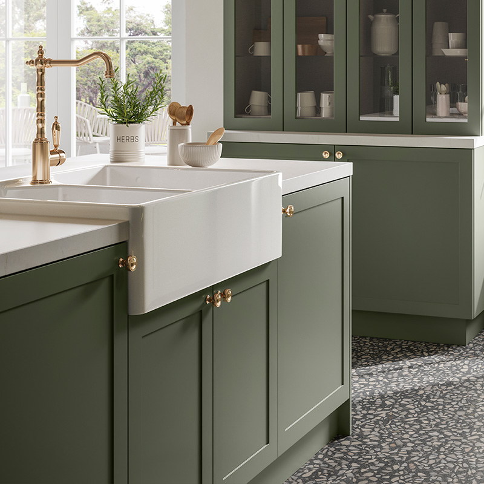
VEGA COMPACTKöşe fasulye kiler mekanizması, entegre raylı atık ayrıştırma ünitesi, Belenco tezgah.
Fonksiyonellik, ergonomi ve zamansız mimari estetiğin İzmir Kaynaklar atölyemizdeki zanaatla buluşması.
Mutfak, modern bir evin en yoğun kullanılan ve aile fertlerinin bir araya geldiği en dinamik yaşam alanıdır. Doğru bir iç mimari planlama ve ergonomik fonksiyonellikle kurgulanan bir mutfak, evin tüm enerjisini ve yaşam kalitesini doğrudan dönüştürür. Mutfak tadilatı ve özel imalat süreci, yalnızca eskiyen dolap kapaklarının yenilenmesiyle sınırlı kalmayıp; pişirme, hazırlık ve depolama üçgeninin (çalışma üçgeni) kusursuz bir mimari uyumla inşa edilmesini gerektirir. Estetik, işlevsellik ve kullanım kolaylığı bir araya getirildiğinde hem göz alıcı hem de uzun yıllar ilk günkü performansını koruyan mekanlar ortaya çıkar.
Mutfak yenileme projelerinde başarı, alanın santimetrik olarak verimli değerlendirilmesine dayanır. Küçük ve kompakt mutfaklarda köşe kör nokta kiler sistemleri, tavana kadar uzanan boy dolaplar ve entegre masa çözümleriyle maksimum depolama alanı oluşturulurken; geniş ada mutfaklarda ferah sirkülasyon hatları ve geniş hazırlık tezgahları ön plana çıkarılır. İzmir Kaynaklar'daki üretim atölyemizde kişiye özel olarak geliştirdiğimiz tüm mutfak dolaplarında, alanın gün ışığı alma açısından havalandırma menfezlerine kadar her parametre lazer metre hassasiyetiyle analiz edilir.
Mutfak gibi yüksek neme, buhara ve sıcaklığa maruz kalan ıslak hacimlerde kullanılan malzemenin direnci hayati önem taşır. Üretimimizde asla sıradan sunta veya yoğunluğu düşük yonga levhalar kullanılmaz; tüm ana gövdeler 18 mm E1 sertifikalı yeşil marin MDF plakalardan imal edilir. İtalyan su bazlı sararmaz lake, çizilmeye mukavim akrilik ve doğal meşe/ceviz kapaklarımız; Avusturya menşeili Blum sessiz yavaşlatıcılı ray mekanizmaları ve çift kademeli kalkar kapak donanımlarıyla birleştirilir. Gövde kenarları lazer bantlama teknolojisiyle preslenerek su ve buhar sızdırmazlığı fiziksel güvence altına alınır.
Çalışma sistemimizin temelini detaylı projelendirme disiplini oluşturur. Mutfak imalatına ve yıkım-kırım uygulamasına geçmeden önce, lazer rölöve verileriyle mekanınızın fotogerçekçi 3 boyutlu mimari modellemesini hazırlarız. Tezgah rengi, kulp detayları, LED aydınlatma açıları ve ankastre cihaz yerleşimleri bilgisayar ortamında birebir onayınıza sunulur. Böylece uygulama sonunda sürpriz maliyetler ya da beklenmeyen tasarım hatalarıyla karşılaşma riski sıfırlanır.
Özetle; doğru malzeme seçimi, usta marangozluk işçiliği ve profesyonel montaj kadrosuyla birleşen bir mutfak tadilatı, evinizin değerine kalıcı değer katar. İzmir Mutfak Banyo güvencesiyle hayalinizdeki lüks ada mutfak veya modern lake tasarıma sahip olmak için atölyemizden doğrudan üretim avantajını yaşayabilirsiniz.
Hazır kalıp modüller yerine mekânınızın ışık açısına, kolon girintilerine ve kullanım alışkanlıklarınıza özel milimetrik projelendirme. İzmir Kaynaklar imalat atölyemizde birinci sınıf marin gövde ve İtalyan lake kapaklarla ömürlük mutfaklar üretiyoruz.
Kulpsuz entegre alüminyum Gola profil kanalları, dokunmatik bas-aç çekmece mekanizmaları ve kesintisiz minimalist yüzey geometrisi.
Geniş porselen ada tezgahlar, entegre bar masası, gizli kiler depolama modülleri ve aspiratörlü indüksiyonlu ocak çözümleri.
Zarif çerçeveli mat lake kapaklar, pirinç fırçalanmış kulp detayları, porselen eviye ve masif meşe sıcaklığını buluşturan zamansız tasarımlar.
Tasarım estetiğini en üst düzey mühendislik ve malzeme kalitesiyle güvence altına alıyoruz.
| Teknik Kriter | İzmir Mutfak Banyo İmalat Standardı | Avantaj & Güvence |
|---|---|---|
| Gövde Malzemesi | E1 Sertifikalı Suya Dayanımlı Yeşil Marin MDF-Lam (18 mm) | Neme Dayanıklı Şişme ve sarkma yapmaz |
| Kapak Seçenekleri | Sararmaz İpek Mat / Parlak İtalyan Lake, Çizilmez Akrilik, Doğal Ahşap Kaplama | Kolay Temizlenir UV ışınlarına karşı solmaz |
| Donanım & Raylar | Avusturya Menşeili Blum Tandembox / Antaro Yavaş Kapanır Frenli Sistemler | Ömür Boyu Akıcı Kadife sessizliğinde kapanma |
| Çekmece Taşıma Kapasitesi | 40 kg - 70 kg arası dinamik çelik yanaklı taşıma kapasitesi | Ağır tencere ve tabaklarda sıfır eğilme |
| Tezgah Entegrasyonu | Laminam, Neolith, Dekton Porselen, Çimstone & Belenco Kuvars | Leke tutmaz, çizilmez ve ısıya tam dayanıklıdır |
| Rölöve & Projelendirme | Hassas 3D Lazer Metre Taraması ve Fotogerçekçi Render Modelleme | Uygulama öncesi mutfağın son halini 3D görme imkânı |
Rölöve alımı ve 3D tasarım onayının ardından üretim süremiz kapak türüne göre ortalama 15 ila 25 iş günüdür. Montaj işlemi ise kadrolu ustalarımız tarafından 1-2 iş günü içerisinde anahtar teslim tamamlanmaktadır.
İzmir içi tüm ilçelerde (Urla, Çeşme, Karşıyaka, Bornova, Buca, Narlıdere, Güzelbahçe vb.) ilk rölöve keşfi ve ön 3D modelleme çalışmamız tamamen ücretsizdir.
Tüm gövde karkaslarımızda neme ve suya mukavim yeşil marin gövdeli 18 mm E1 sertifikalı MDF-Lam malzeme kullanıyoruz. Sunta veya düşük yoğunluklu yonga levha kesinlikle atölyemize girmemektedir.
Evet, sadece mobilya üretimi değil; eski mutfağın sökümü, moloz atımı, su-elektrik tesisatlarının yeni plana göre revizyonu, şap, seramik döşeme ve tezgah montajını içeren komple anahtar teslim hizmet sunuyoruz.